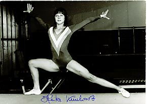

Heike Kunhardt (GDR)
1978 GDR Champion

Medal Total
World Championships: 1 Bronze
Competition Results
1973
GDR-NOR Dual Meet: 1st Team, 5th AA
1974
Jr. Friendship Tournament (Druzhba): 3rd Team, 4th V, 6th UB
1975
Jr. Friendship Tournament (Druzhba): 3rd Team, 9th AA, 5th UB
USSR-GDR Dual Meet: 2nd Team, 5th AA
1976
CSSR-GDR Dual Meet: 1st Team, 4th AA
FRG-GDR Dual Meet: 1st Team, 4th AA
GDR Championships: 5th UB, 6th V
GDR-HUN Dual Meet: 1st Team, 4th AA
Jr. Friendship Tournament (Druzhba): 3rd Team, 7th AA, 2nd B, 6th FX
1977
Antibes International: 6th AA, 2nd UB
Chunichi Cup: 12th AA
Cottbus International: 2nd AA, 1st UB, 4th FX
European Championships: 7th AA, 4th FX, 7th V, 8th UB
Four Cities Cup: 3rd AA
GDR Championships: 4th AA
Paris Grand Prix: 6th AA, 2nd B, 2nd FX
Wereld Turn Top: 2nd AA, 1st UB, 1st B
1978
DTV Cup: 4th AA
GDR Championships: 1st AA
GDR-HUN Dual Meet: 1st Team, 5th AA
USSR-GDR Dual Meet: 2nd Team, 9th AA
World Championships: 3rd Team, 20th AA (prelims), 7th V
This page was created on September
03, 2005 and was last updated on Jan. 19, 2017.
© Gymn Forum